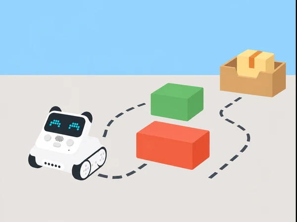

El grup dissenya una ruta de baixa velocitat entre magatzem, parada i destinació. Es tracta d’estudiar una resposta programada davant un obstacle dins d’un prototip controlat, no de confiar un lliurament real a un robot autònom.
Es treballen seqüències, distàncies, condicions, depuració i disseny de proves. L’evidència és el plànol, una taula de proves i el programa comentat amb les condicions en què falla.
Cal verificar la presència i el comportament del sensor infraroig en el model disponible. Manteniu velocitat i obstacles baixos, espai lliure al voltant i supervisió directa; no es prova prop d’escales, persones en moviment ni objectes fràgils. El sensor no garanteix detectar tots els obstacles.
Permeteu dissenyar el recorregut en paper abans de manipular el robot i assigneu rols rotatius. Una ruta curta, una ordre per targeta o la lectura en veu alta faciliten la participació sense reduir el repte de raonament.
Hem pres com a punt de partida Case 18: Codey Rocky avoids obstacles. Aquesta situació és una proposta pròpia amb context, seqüència i materials verificables per al centre; no reprodueix ni substitueix el material oficial. Comproveu sempre el model de robot i els accessoris disponibles.